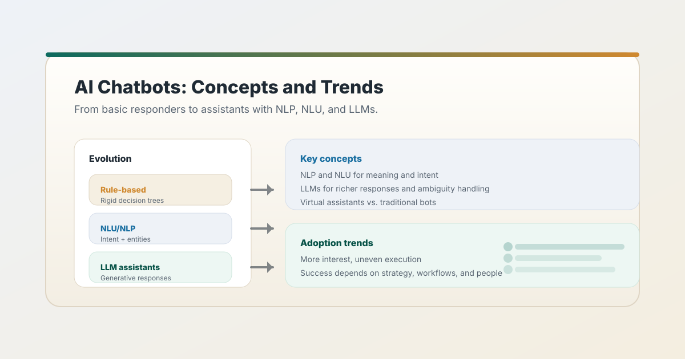
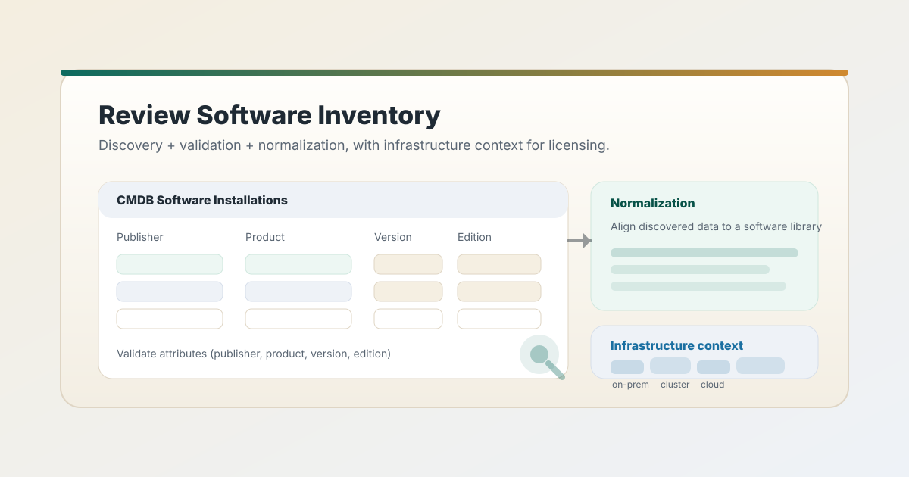
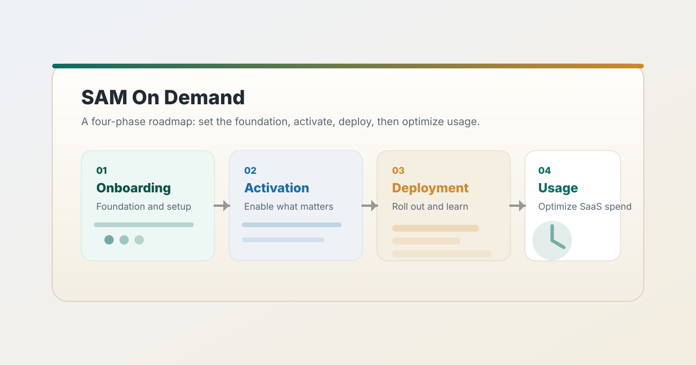
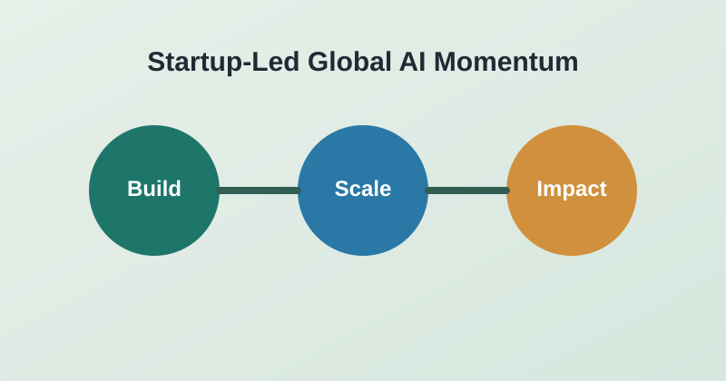
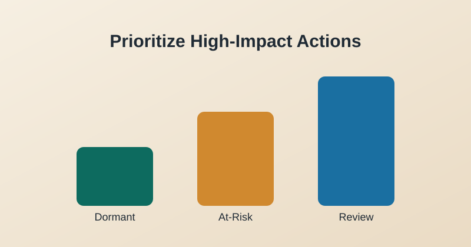

Blog Posts
Practical perspectives on software governance, AI adoption, and operational decisions.
Decision support resources for teams managing software spend, audits, and AI-assisted operations. Built to support rollout and governance across NyLi Assets and NyLi Insights.
Practical perspectives on software governance, AI adoption, and operational decisions.
Field examples that clarify reclaim risks, verification patterns, and defensible action paths.
Decision-support briefs for finance, compliance, and operations leaders managing SaaS spend.
Showing all resources

Blog Post
A practical reflection on chatbot evolution, key technologies, and what leaders need to ground adoption in real workflows.

Blog Post
How modern chatbots work, where they deliver value, and how to implement safely with measurable outcomes.

Blog Post
Why inventory accuracy, normalization, and infrastructure context determine compliance confidence and cost optimization.

Blog Post
A practical reflection on SAM as a strategic discipline for compliance confidence, SaaS optimization, and lower software costs.

Blog Post
Leaders are overwhelmed by AI hype and tool sprawl. A pragmatic, governance-first approach to ship value in 90 days without burning out teams.

Blog Post
A practical view of why enterprise AI adoption still lags technical progress and how teams can plan responsibly.

Blog Post
How startup execution speed, ownership, and measurable outcomes are shaping practical enterprise AI adoption decisions.

Case Snapshot
A structured reclaim cadence for compare, verify, and revoke cycles with clear ownership and defensible decisions.

Case Snapshot
What reviewers need to see in timestamped logs, IP records, and export-ready evidence to validate audit actions.

Strategy Brief
How teams use AI summaries, anomaly detection, and user categorization to prioritize risk review while keeping human judgment in control.
Use these resources to prepare your first NyLi Assets audit cycle and start compare-and-verify reclaim planning before renewal reviews.
Request a Consultation